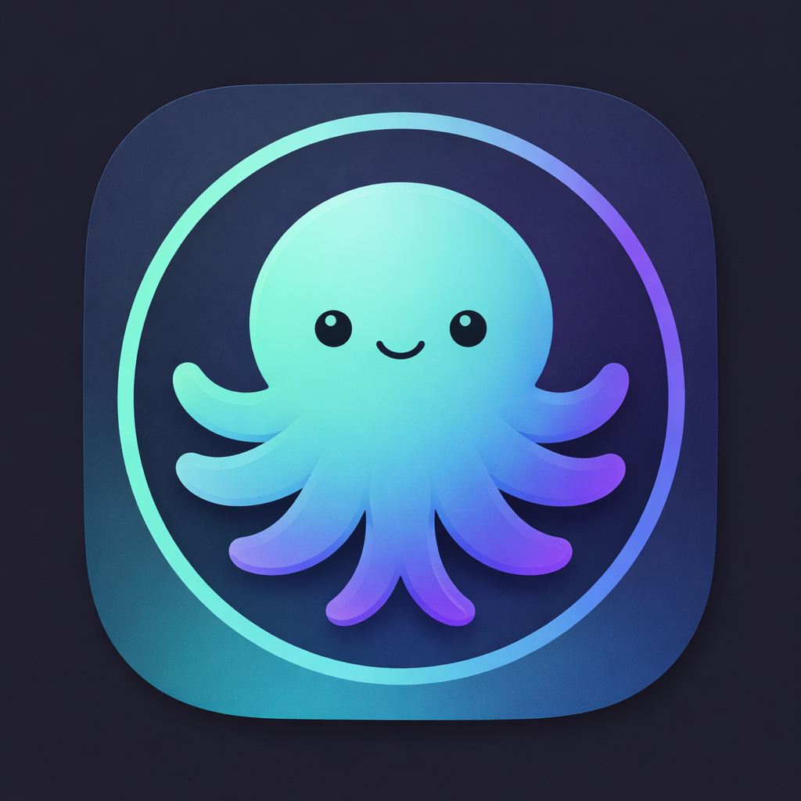
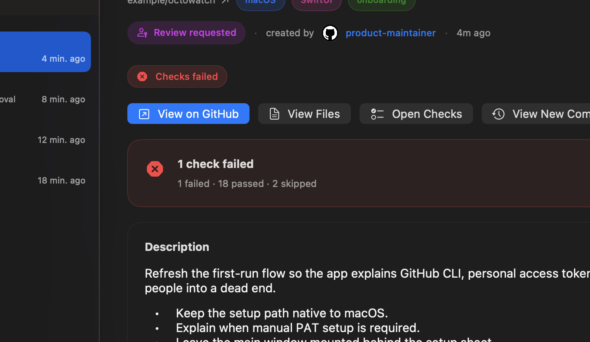
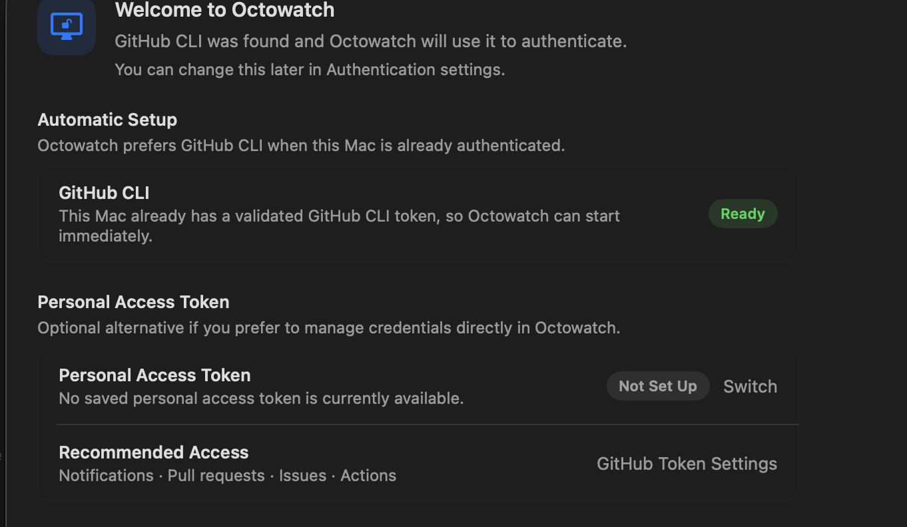

One inbox
Pull requests, issues, workflow failures, and GitHub notifications come together in one stream.

OctowatchNative macOS triage for GitHub
Octowatch keeps pull requests, notifications, workflow runs, and security alerts in one focused inbox with a menu bar view, full detail window, and direct actions.
Looking up the latest release…
Pull requests, issues, workflow failures, and GitHub notifications come together in one stream.
Bring the work that actually needs action right now to the top with configurable inbox rules.
Review, merge, snooze, open checks, and jump to GitHub from a native macOS window instead of a browser tab pile.
Screenshots


Install
The website always points at the latest published GitHub Release. Published binaries are signed, notarized, and include Sparkle-powered in-app updates.
Open release downloads
Octowatch is a SwiftUI macOS app. Clone the repo, run
swift build, or generate the Xcode project with
xcodegen generate.
Install from the dedicated Homebrew tap:
brew install --cask fiam/octowatch/octowatch